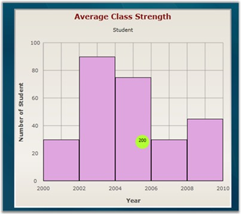

Predefined shapes for annotation objects are used to point at specific information about a position in the chart. For example: Circle, Arrow etc.
The following table describes more about the annotation shapes:
|
Name of the Property |
Type of Property |
Values It accepts |
|
Content |
Dependency Property |
String |
|
AnnotationShape |
Dependency Property |
Enum of type AnnotationShapes |
|
Fill |
Dependency Property |
Colors from brushes |
|
Offset X |
Dependency Property |
Double value |
|
Offset Y |
Dependency Property |
Double Value |
 Note:
Note:
· The Description property helps insert the required content in the annotation object.
· The AnnotationShape property helps create the required shape for annotation objects.
· The Fill property helps fill the selected shape with required color.
The following code snippet illustrates the creation of pre-defined annotation object for Chart series.
|
[XAML]
<syncfusion:ChartSeries Type="Histogram" Label="Student" Interior="Plum" DataSource="{StaticResource data}" BindingPathX="ProductName" BindingPathsY="Sales" > <syncfusion:ChartSeries.Annotations> <syncfusion:AnnotationsCollection> <syncfusion:ChartSeriesAnnotation OffsetX="200" OffsetY="200" AnnotationShape="Circle" Fill="GreenYellow">
</syncfusion:ChartSeriesAnnotation> </syncfusion:AnnotationsCollection> </syncfusion:ChartSeries.Annotations> </syncfusion:ChartSeries> |
|
[C#]
Chart1.Areas[0].Series[0].Annotations[0].AnnotationShape = AnnotationShapes.Circle; Chart1.Areas[0].Series[0].Annotations[0].OffsetX = 200; Chart1.Areas[0].Series[0].Annotations[0].OffsetY = 200; Chart1.Areas[0].Series[0].Annotations[0].Fill = GreenYellow; |
Run the code. The following output is displayed.

Figure 108: Annotation Shape-Circle
A sample which demonstrates the various predefined annotation shapes in Essential Chart is available in the following install location:
C:\Documents and Settings\<user name>\My Documents\Syncfusion\Essential Studio\ Samples\Silverlight\Syncfusion.Chart.Silverlight.Samples\Samples\Annotation